GAETAN LE COULS
Etudiant Ingénieur | Calcul Fluide-Structure
Projets et Réalisations
Etude des performances d’un brise-lames flottant - Essais en bassin
Contexte
Dans le cadre d'un projet en partenariat avec le bureau d'études Terres Océanes, nous avons étudié experimentalement une digue flottante destinée à réduire l'impact de la houle sur les zones côtières. L'objectif était d'évaluer son efficacité dans différentes conditions de mer et d'identifier des améliorations permettant de limiter la transmission des vagues.
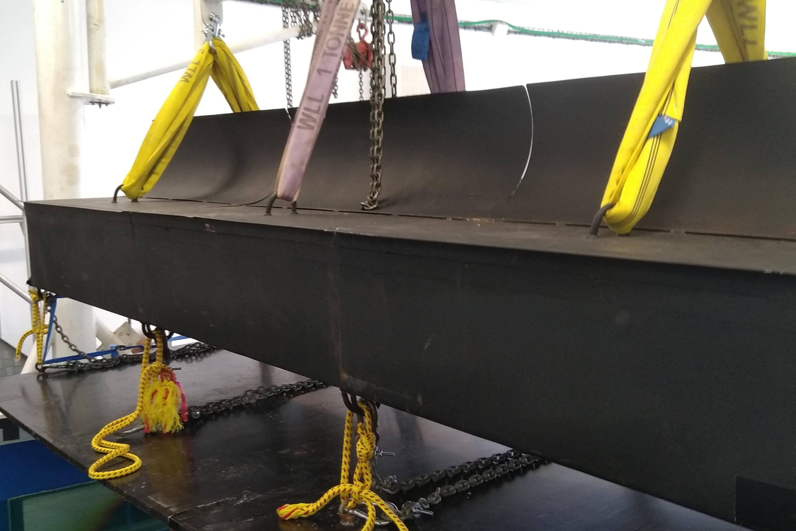
Etapes du projet
- Préparation de la maquette à l'échelle 1/20 et installation dans le bassin à houle.
- Réalisation des essais en bassin pour différentes amplitudes et périodes de houle.
- Détermination des coefficients de réflexion et de transmission à partir des mesures expérimentales et de leur traitement sous Matlab.
- Élaboration de la table des performances de la structure afin de comparer son efficacité selon les différents états de mer.
Résultats
La digue est efficace pour des houles de faible période, typiquement autour de 2 à 7s dans les conditions étudiées, avec un coefficient de transmission inférieur à 0.6. Cette structure est donc particulièrement adaptée aux conditions de houle de la Méditerranée.
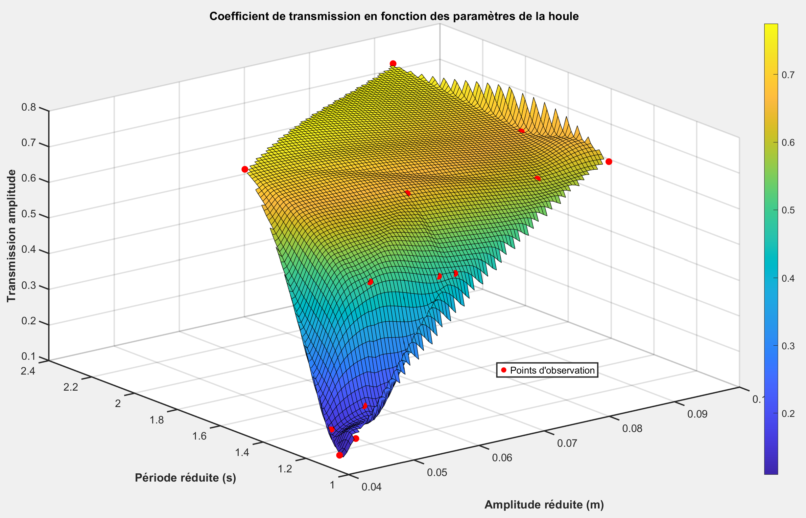
Simulation hydrodynamique de l'écoulement autour d'un obstacle
Cette étude s'intéresse à l'analyse de l'écoulement hydrodynamique au sein d'un canal à houle équipé d'un haut-fond. L'objectif est d'observer les perturbations générées par la topographie sous-marine sur la propagation des ondes et sur la structure du champ de vitesse.
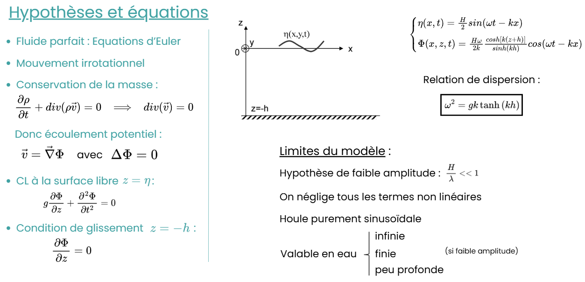
Visualisation du dispositif expérimental / numérique du canal à houle
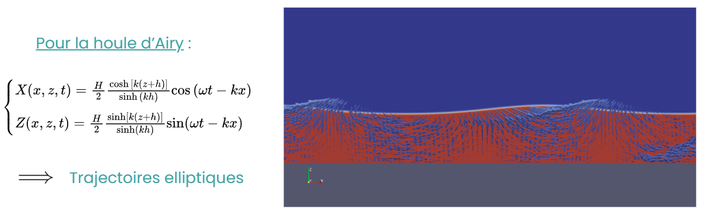
Lignes de courant autour de l'obstacle
Simulation dynamique de l'écoulement
L'analyse détaillée met en évidence l'apparition de tourbillons (ou structures de recirculation) formés en aval de l'obstacle. Ce phénomène de décollement de la couche limite est induit par les variations brutales de la bathymétrie, provoquant des pertes de charge locales et une redistribution importante de l'énergie cinétique dans le fluide.
Optimisation de forme assisté par intelligence artificielle
Contexte
L'objectif était d'optimiser la géométrie d'une poutre trouée encastrée soumise à la flexion, afin d'améliorer sa rigidité tout en conservant une quantité de matière constante. Une seconde partie du projet consistait à utiliser les résultats de ces optimisations pour constituer une base de données destinée à entraîner un modèle d'IA capable de prédire directement la géométrie optimale.
Optimisation via un algorithme itératif de minimisation d'énergie
Cette étape consiste à optimiser la résistance mécanique sous contrainte de volume (en conservant la même quantité de matière) à l'aide d'un multiplicateur de Lagrange. L'algorithme redistribue la matière de manière optimale pour réduire les zones de fortes contraintes.
Validation numérique de l'optimisation
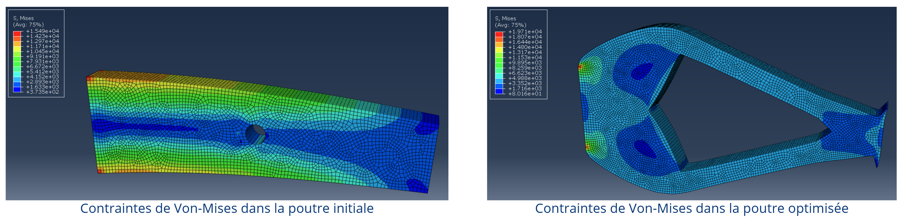
La validation numérique confirme une meilleure résistance de la structure optimisée, avec notamment une flèche diminuée de 40% par rapport à la poutre initiale.
Prédiction par un réseau de neurones
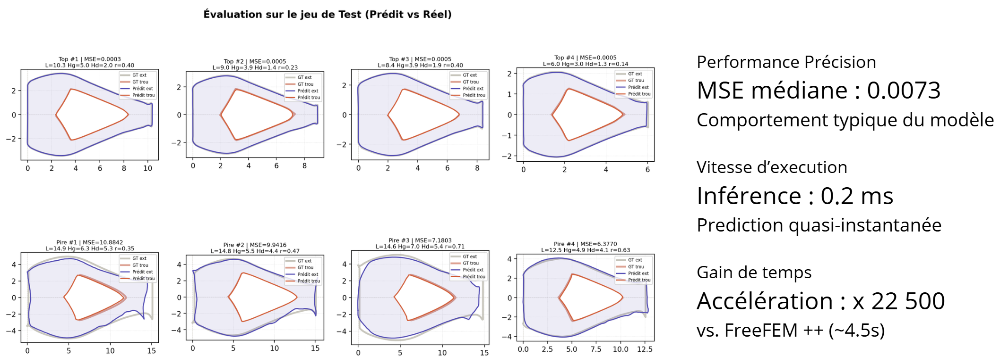
Etude mécanique et dimensionnement d’une passerelle piétonne
Contenu à venir pour ce projet...
Conception d'un IMOCA sur Rhino3D
Passion et Modélisation 3D
Passionné par la voile et notamment par la course au large, j'ai profité de mon temps libre pour concevoir un modèle complet d'IMOCA sur Rhino3D. Ce projet personnel m'a permis de me familiariser en profondeur avec le logiciel, à la fois sur la partie conception géométrique (surfaçage, lignes de coque, appendices) et sur la partie rendu visuel.
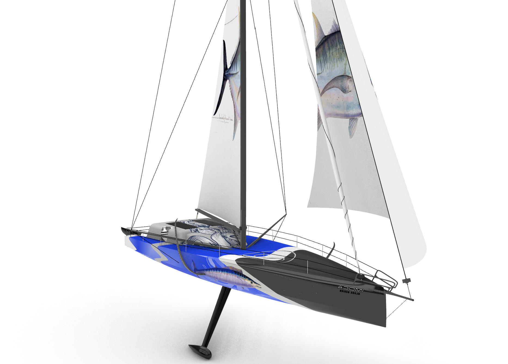
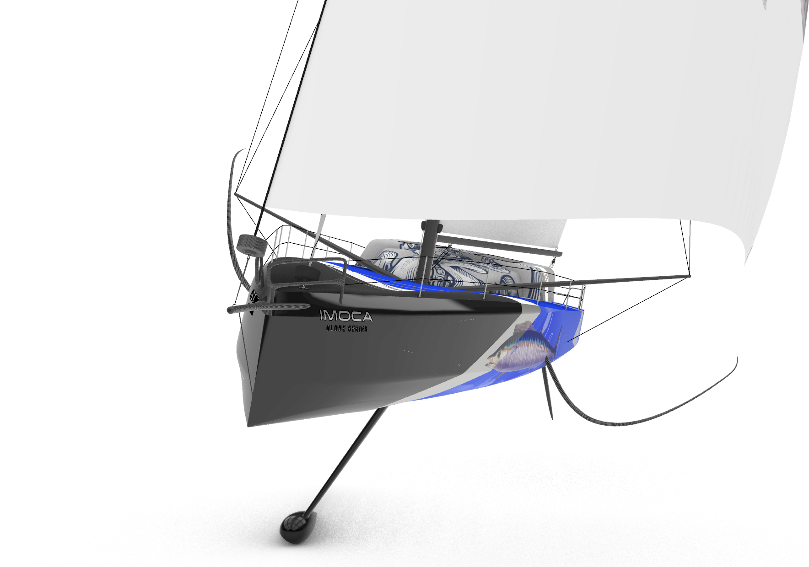
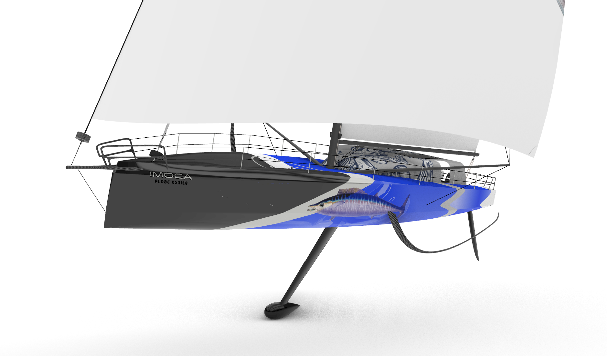
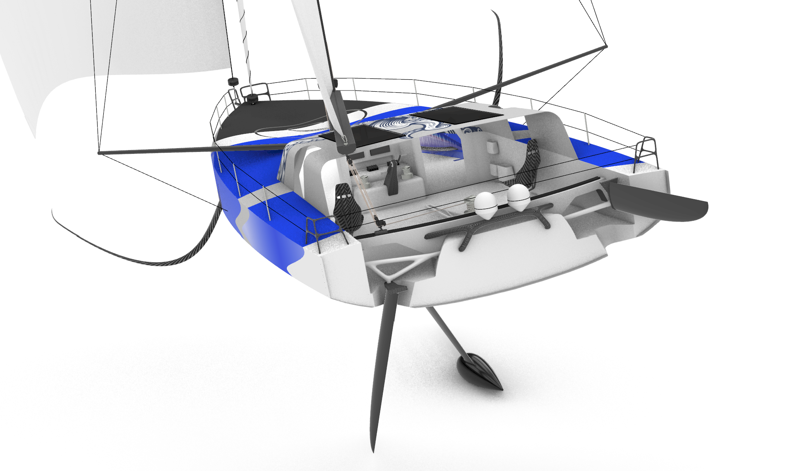
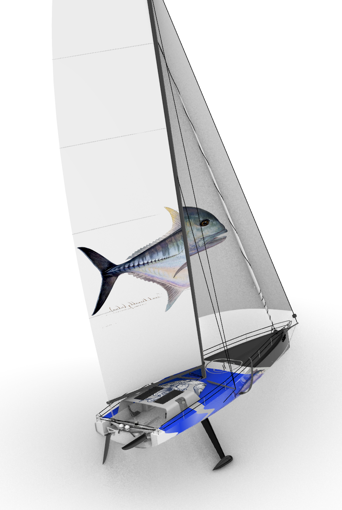
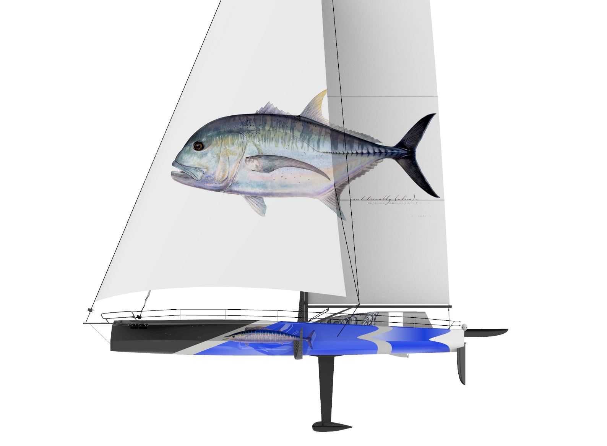
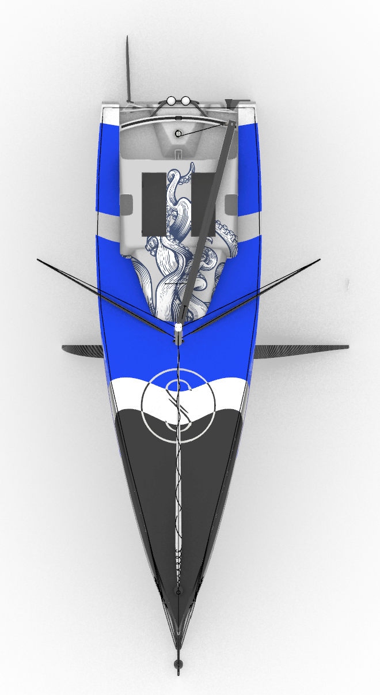